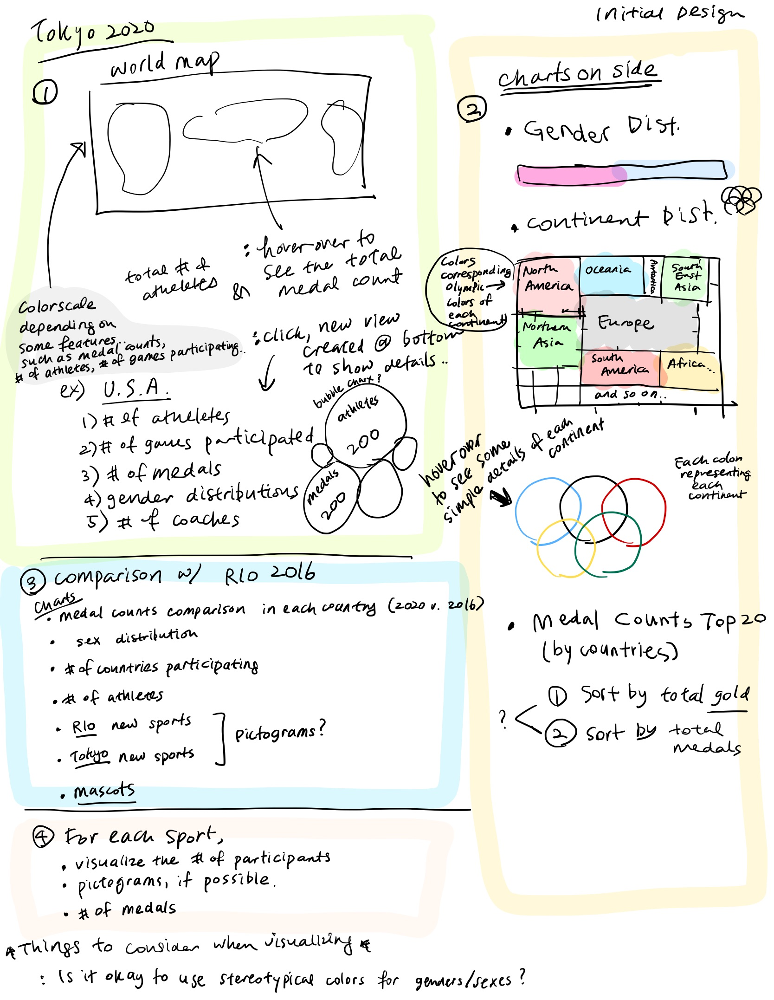

Visualization Design
Brain Storming Sheet
We first wrote down some stuffs that could be visualized in our project. Then we narrowed it down/filtered it out with pink highlights to find what we really want to focus on. The blue letters were written during filtering out process.

First Design
We first focused on Tokyo 2020 specifically.
Positive/Negative: Good initial ideas, but not interactive enough and just shows bulk of data at once.
Second Design
As written in the image, we decided to be more general. Our target data is now summer Olympics for last 120 years.

Positive: A more interactive visualization as we can look through 29 different Olympics.
Negative: Too unorganized, not too intuitive how to navigate the page.
Third Design
We developed the idea with more charts so that we could visualize some important data.

Positive: Using a map makes it more intuitive to visualize a world event like the Olympics.
Negative: It may be difficult to use the geo mapping on d3 as countries have changed in the 120 years such as USSR, West Germany, etc.
Fourth Design
As we looked into the data, we figured out some of the countries back in 1896, 1968 and many other past years could not be represented in current world map. We decided to use bubble chart instead of the world map. The bubble charts group countries by continents. The size of each bubble is the number of athletes in each country. The colors of groups are the color of Olympic Rings

Positive/negative: Bubble layout may not be the easiest/ most intuitive visualization to make, but I think we may need to code it first before we tweak how it will look like.
Wire Frame of the Final Design
This is the polished version of the final design. Click the link to see in pdf format Wire frame of final design

- Timeline
- Bubble Map
- Percentage bar charts for gender distribution.
- Horizontal bar chart for medal counts
- User clicks on the timeline which will open up the map below for the year clicked. It will also display the gender distribution and top 10 countries in terms of medal count visualizations.
- If the user clicks on a bubble, it will open up the information for that country on the right.
- If they hit the drop down box next to the “Compare with other Olympics” text, it will have the choices of the other olympics and the gender distribution and medal count distribution of that olympics will pop up.
Must-Have Features
- Timeline that shows the different summer olympic years
- Some map that displays the different countries
- Comparison of gender distributions
- Top 10 country medal counts.
Optional Features
- Hover over the timeline shows city names.
- Hover effect for the map
- Show fun facts about total numbers over the 120 years such as who got the most medals (athlete/country/gender) who got the most silver medals.